Explore Bogotá
A Brief History
Bogotá was founded in 1538 on a plateau of the Andes and became the capital of Gran Colombia and later the Republic of Colombia. La Candelaria's colonial houses, the Gold Museum, and Monserrate hill record Spanish administration, independence under Bolívar, and 20th-century urban growth as a regional financial centre. Municipal archives, parish records, and surviving architecture help explain how the city connected to wider regional trade routes, court patronage, and modern civic rebuilding after industrial and wartime change.
Attractions Map
Top Sights & Activities
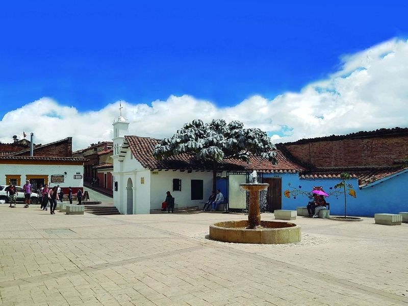
Plazoleta Chorro de Quevedo
Plazoleta Chorro de Quevedo, also known as Pueblito Rolo, is a historic square located in the highest part of Bogota's La Candelaria neighborhood. It is believed to be the site where the city was founded and features colonial buildings, cobblestone streets, and a modest fountain. The area is popular with street artists and college students, creating a lively atmosphere.
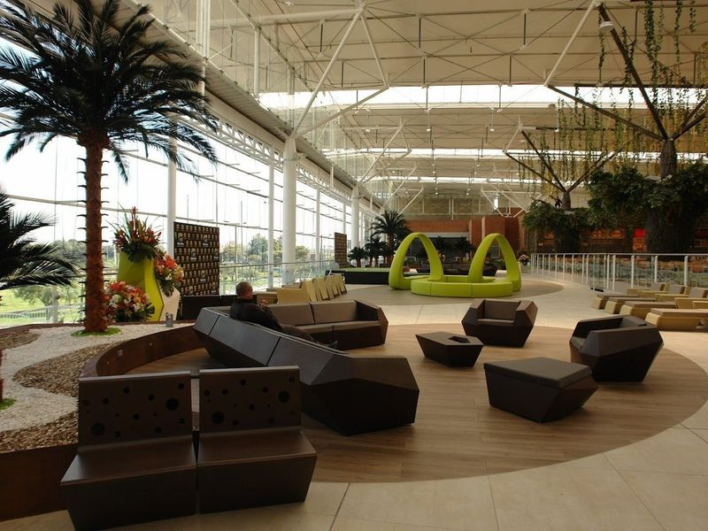
Hayuelos Mall
Hayuelos Centro Comercial is a modern multilevel indoor mall that offers a diverse range of shopping, dining, and entertainment options in a contemporary setting. It features popular retail stores, a cinema, and a playground for kids. The ample parking lot makes it convenient to visit, and it's adjacent to a general store (Jumbo) and fast-food chain (McDonald's). On weekends and holidays, small businesses set up kiosks within the mall halls.
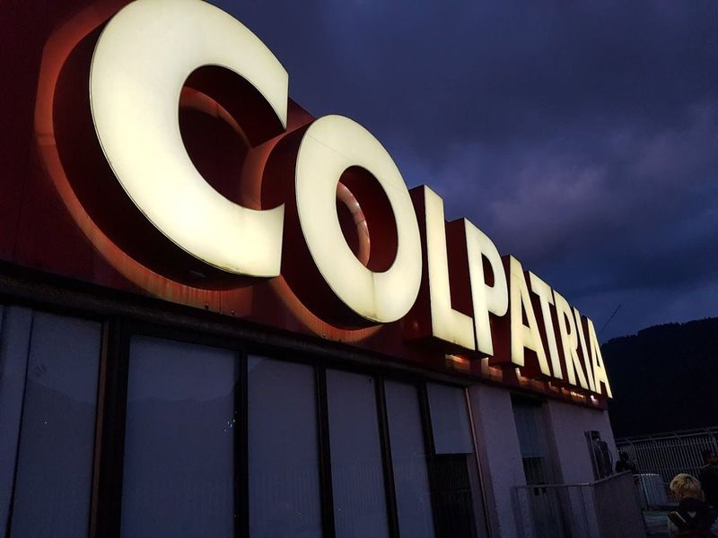
Colpatria Tower
Colpatria Tower is a prominent skyscraper located in Bogota, offering a mix of office spaces and an occasional open-to-the-public observation deck. Situated near the public transport hub at the intersection of 7th and 10th avenue, it provides urban views featuring popular landmarks such as Hotel Tequendama. Visitors can enjoy capturing the city's skyline from different angles due to the area's abundance of buildings.
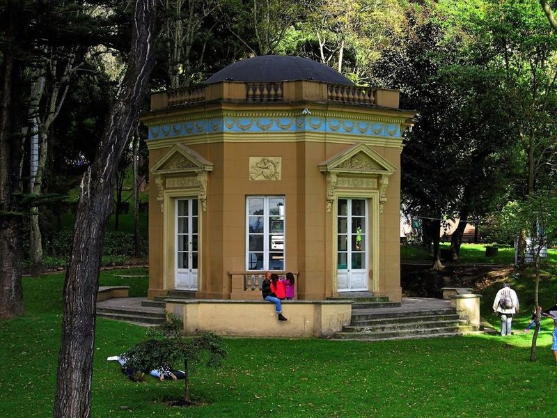
Parque de la Independencia
Parque de la Independencia, established in the early 1900s to celebrate Colombia's centennial of independence, is a serene green oasis nestled amidst the bustling cityscape of Bogotá. This park features an array of statues and architectural gems like the Quiosco de la Luz and Pabellon Industrial, each telling a story from different historical periods.
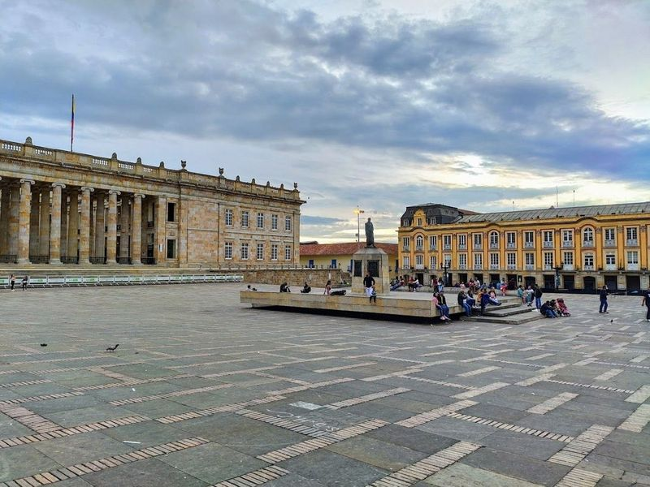
Plaza de Bolívar
Plaza de Bolívar is a historic city center in Bogota, Colombia, surrounded by significant buildings and notable architecture. The area offers a mix of old and new, with the Plaza once being a stage for bullfights but now juxtaposed with modern structures like the Palace of Justice and Lievano Palace. Visitors can explore nearby attractions such as the Metropolitan Cathedral Basilica of the Immaculate Conception and take part in graffiti tours led by individuals involved in the urban art scene.
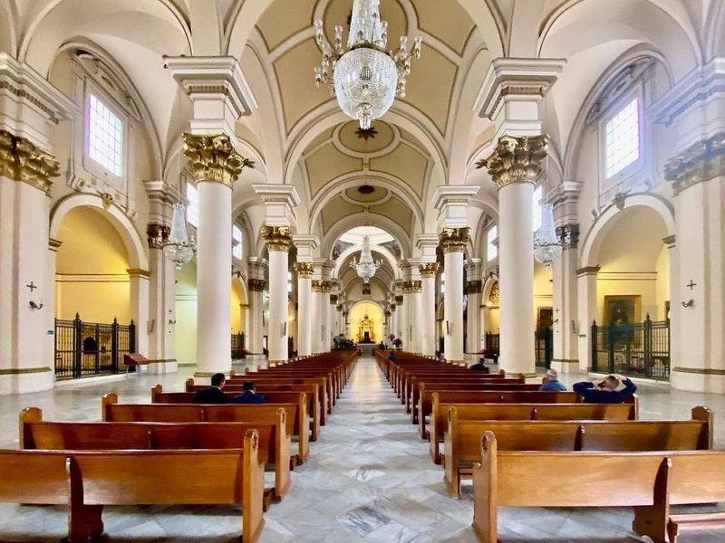
Catedral Primada de Colombia
Catedral Primada de Colombia, located in the heart of Bogota's La Candelaria neighborhood, is a significant religious and historical site. Construction began in 1807 during Spanish rule and was completed after Colombia gained independence in 1823. The cathedral stands on the same grounds as the first church of Bogota, dating back to 1539.
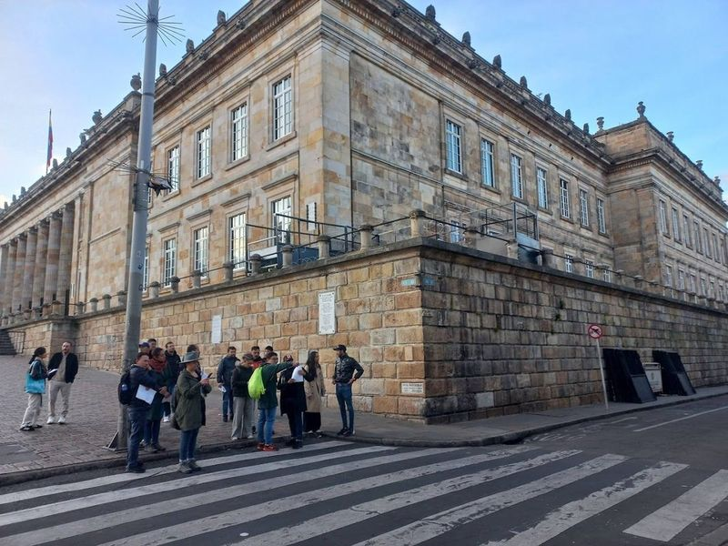
National Capitol
The site forms part of National Capitol's documented civic and cultural landscape within Bogotá, with archives and visitor information available from municipal or regional heritage authorities. The site forms part of National Capitol's documented civic and cultural landscape within Bogotá, with archives and visitor information available from municipal or regional heritage authorities.
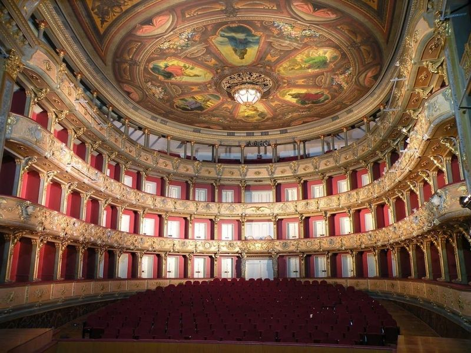
Teatro Colón Bogotá
Teatro Colón Bogotá is a neoclassical national theater building that was inaugurated in 1892 and is considered one of the oldest opera houses in the Americas. The architecture, inspired by the Parisian Palais Garnier, showcases delicate ornamentation dominated by frescoes of the six Greek muses painted by Italian masters.
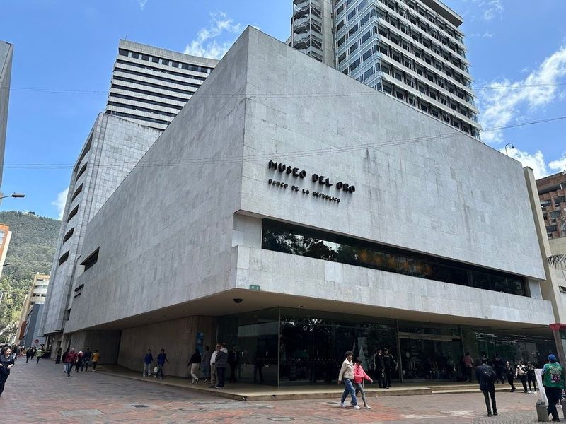
Gold Museum
The Gold Museum, located in the historic city center of Bogota, is a contemporary structure that houses an extensive collection of pre-Columbian gold, ceramics, and stones. It is home to over 34 thousand pieces made of gold and tumbaga, showcasing the art and goldsmithing used by various indigenous communities in Colombia.
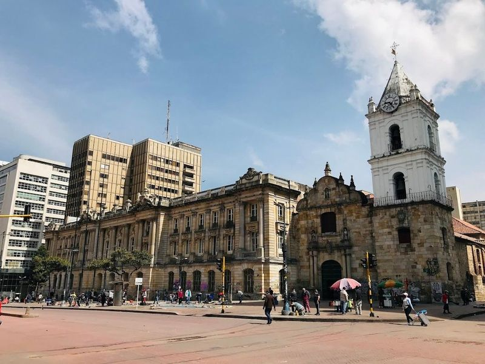
Iglesia de San Francisco
Nestled in the heart of Bogotá, the Iglesia de San Francisco stands as a testament to the city's rich history and architectural beauty. Constructed between 1550 and 1567 by Franciscan monks, this remarkable Catholic church is not only the oldest surviving structure in Bogotá but also a example of Moorish influence on colonial design.
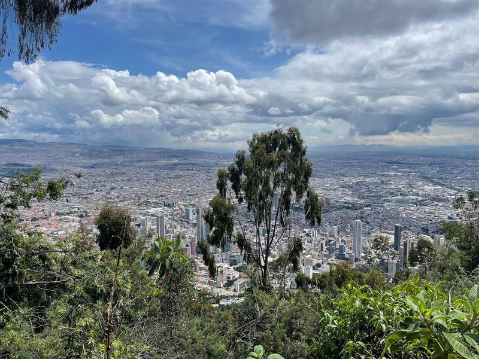
Monserrate
Monserrate, a mountain located in the center of Bogota, is a popular destination for both pilgrims and tourists. At 3,152 meters high, it offers panoramic views of the capital city. The mountain is home to the Sanctuary of Monserrate and features expansive gardens perfect for leisurely strolls. Additionally, visitors can enjoy dining at exclusive restaurants offering local and international cuisine.
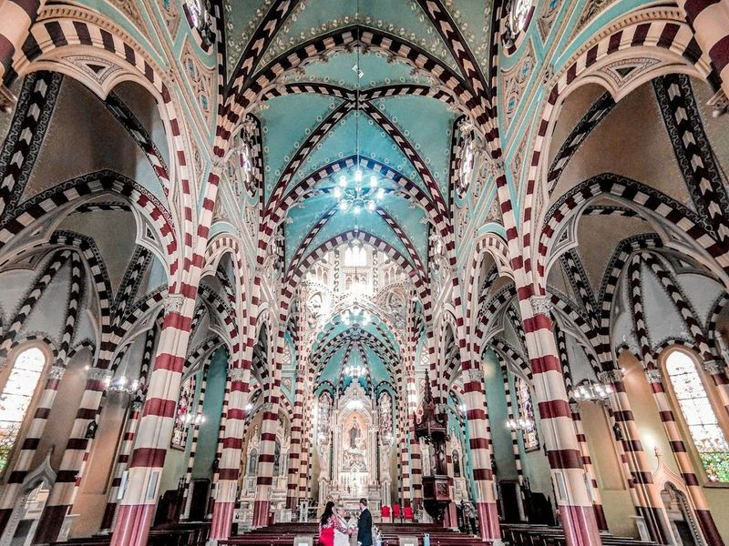
Santuario Nuestra Señora del Carmen
Santuario Nuestra Señora del Carmen is a captivating Catholic temple in Bogota, Colombia. This unique church, built in the early 20th century, showcases a striking Florentine Gothic style with influences from Byzantine and Arabic art. Its most distinctive feature is the red and white horizontal stripes adorning both its interior and exterior. The church stands as a proud testament to history, having undergone restoration due to pollution and humidity damage in the late 1980s.
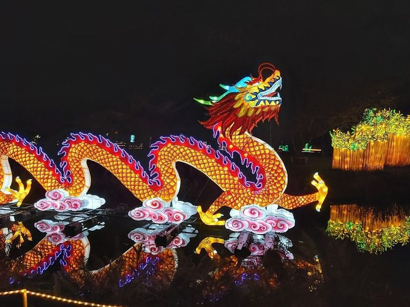
Jardín Botánico de Bogotá José Celestino Mutis
Established in 1955, the Jardín Botánico de Bogotá José Celestino Mutis is a sprawling 20-acre botanical park that serves as both a recreational space and a research center. It boasts an extensive collection of Colombian and Latin American flora, showcasing the diverse ecosystems found throughout Colombia, with a focus on Andean and Paramo ecosystems.
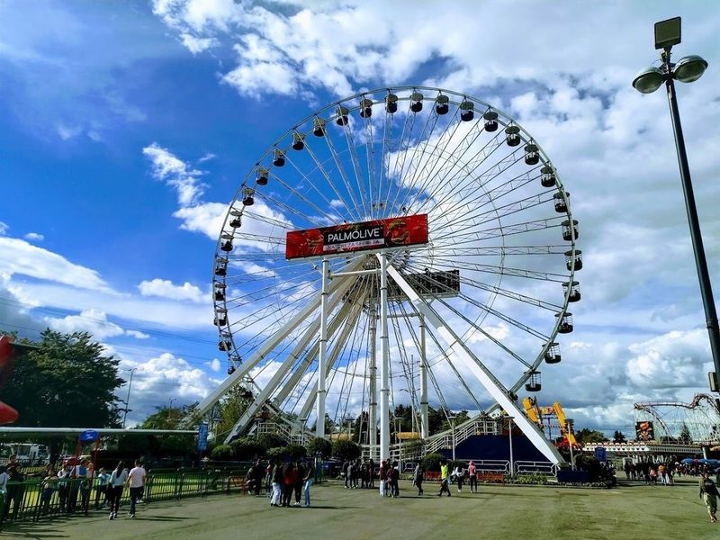
Salitre Mágico Amusement Park
Salitre Mágico, located in the Ciudad Salitre neighborhood, is an amusement park offering 34 attractions for both kids and adults. From high-speed roller coasters to bumper cars and classic county fair games, there's something for everyone. The park also hosts shows for kids and an annual Horror Festival during October. With a variety of rides suitable for all ages, including thrilling roller coasters and gentle kiddie attractions, it's a perfect destination for family fun.
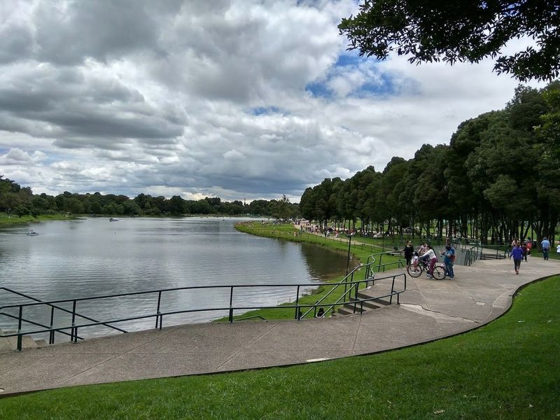
Parque Metropolitano Simón Bolívar
Simón Bolívar Park, also known as the lung of Bogota, is a sprawling green space that offers a variety of activities for visitors. With 113 hectares of land, the park features walking and biking paths, playgrounds for kids, and several lakes where go boating. It has been a venue for numerous events and has hosted famous artists and even two popes.
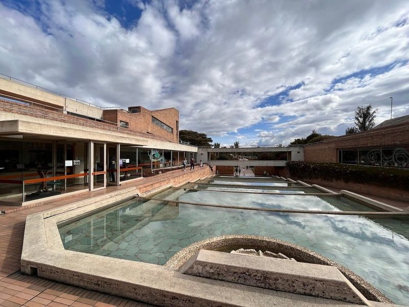
Biblioteca Pública Virgilio Barco
Biblioteca Pública Virgilio Barco is a modern, three-story public library located in Bogota, designed by the renowned Colombian architect Rogelio Salmona. The unique circular shape of the building is surrounded by mirror-like waters, creating a serene environment next to Parque Simon Bolivar. It serves as a cultural hub with an extensive collection of children's books and reading rooms designed for young readers.
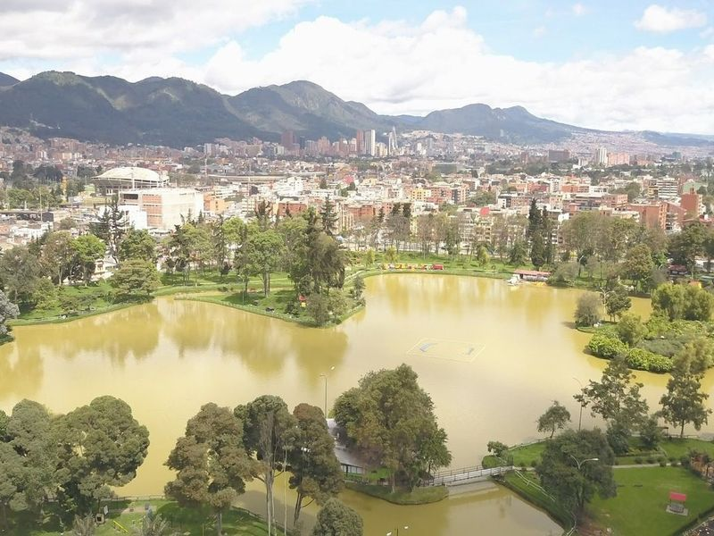
Parque de los Novios
Parque de los Novios, also known as Parque El Lago, is a recreational park in Bogota that offers various attractions. It features a large children's play area and a lake where visitors can enjoy boat rides and kayaking. The park is set to host the Colombia al Parque music festival, showcasing the diverse musical landscape of Colombia. This year's festival has a special theme called 'When the River Sounds,' paying tribute to Colombia's rivers and their cultural significance.
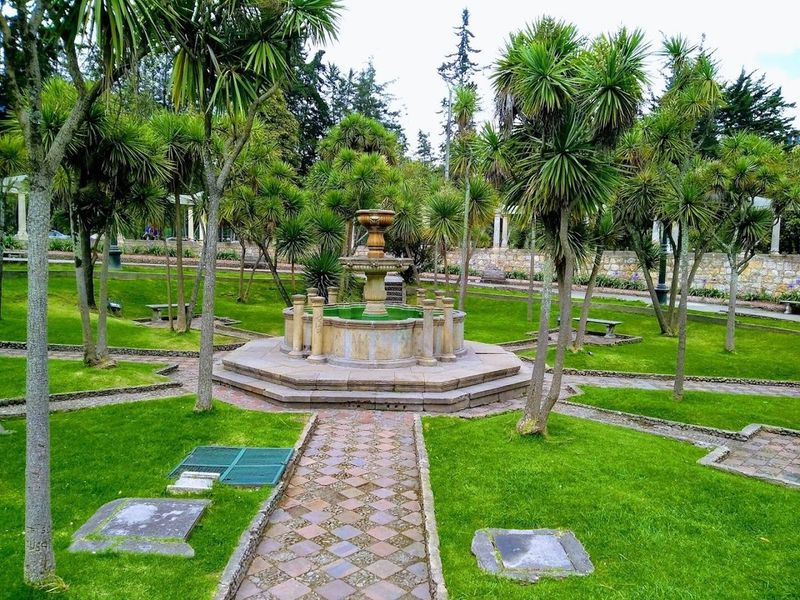
Parque Nacional Enrique Olaya Herrera
Parque Nacional Enrique Olaya Herrera is a historic and park in Bogota, inaugurated in 1934 and located near several universities. It's a popular spot for locals to escape the city's hustle and bustle, offering lush greenery, walking paths, a beautiful lake, and various sports facilities. The park features monuments such as the Monument to Rafael Uribe Uribe and the Monument to Enrique Grau.
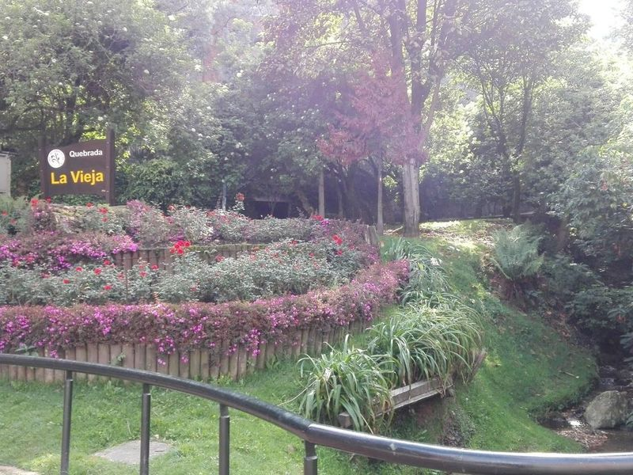
Quebrada La Vieja
Quebrada La Vieja is a serene and secluded hiking trail that takes you up a mountain and along a picturesque stream, offering views from the top. Located in the renowned Rosales neighborhood of Bogota, this ecological trail is part of the Eastern Hills and offers a 1.6-kilometer path through the Bogota River Basin and Forest Reserve.
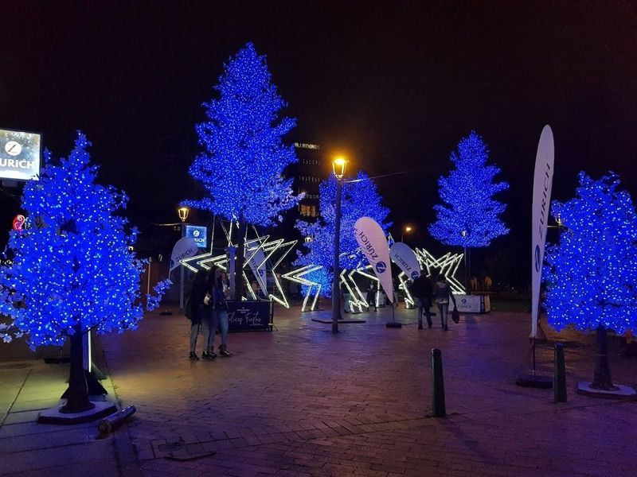
Virrey Park
Virrey Park is a delightful 25-acre urban oasis nestled in the heart of Bogotá's bustling Chico neighborhood. This linear park offers a perfect escape from the city's hustle and bustle, featuring scenic bike routes and pedestrian paths that invite leisurely strolls or invigorating rides. Families will appreciate its well-maintained playgrounds, where children can play freely while parents relax nearby.
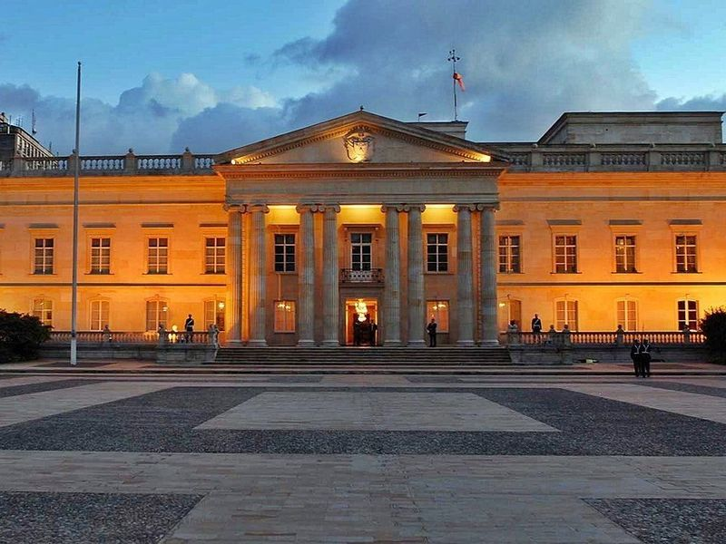
Casa de Nariño
Casa de Nariño, also known as Palacio de Nariño, is the official residence and primary workplace of the President of Colombia. This historic building, constructed in the neoclassical style in the 17th century, stands as a symbol of the country's executive power. It holds significant historical value and offers guided tours by appointment.
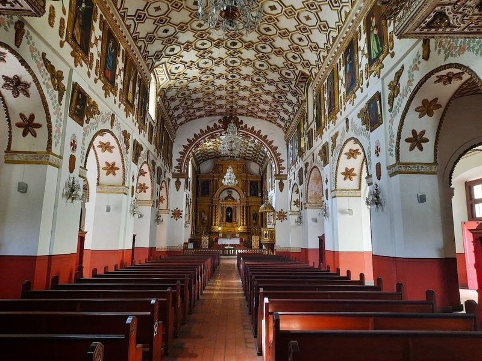
Templo de San Agustin
Nestled in the heart of La Candelaria, the Templo de San Agustin stands as a testament to 17th-century colonial architecture. Dating back to 1642, this national monument is not only one of Bogota's oldest structures but also a treasure trove of colonial art and intricate design. The church played a significant role in history, witnessing pivotal events such as battles for power during Colombia's tumultuous past.
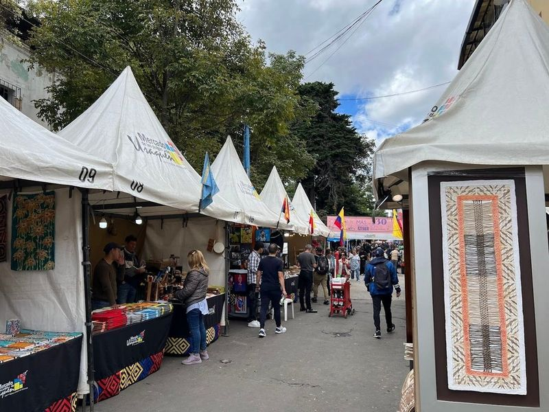
Usaquén Flea Market
The Usaquén Flea Market is a vibrant weekly event in Bogota, Colombia, where outdoor vendors gather to sell a variety of goods including arts, crafts, food, and gifts. The market takes place in the charming cobblestone streets of Usaquén and offers a diverse array of products from luxurious jewelry to artisanal handbags. Visitors can explore the colonial neighborhood while discovering unique handmade items and enjoying delicious fresh foods.
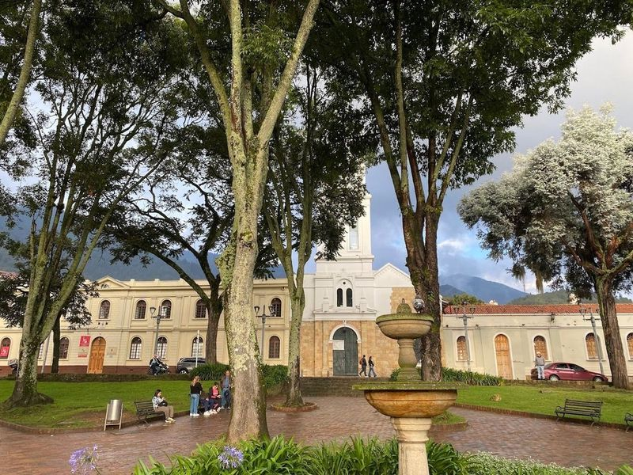
Usaquén Park
Usaquén Park is a charming and compact park located in the stylish neighborhood of Usaquén in Bogota. It is known for its arty boutiques, markets, and restaurants. The park offers pleasant green spaces, thick trees, and alluring water ponds, making it an ideal place for a delightful stroll with friends or family.
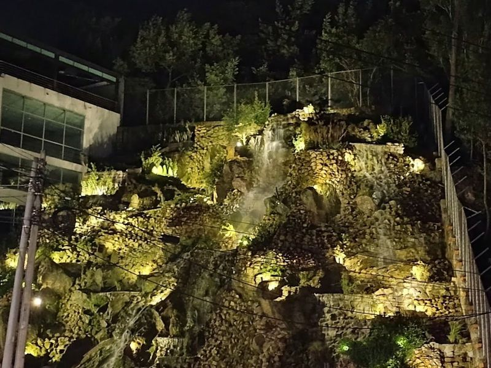
La Calera Observation deck
Perched atop a mountain, the La Calera Observation Deck in Bogota offers an awe-inspiring panoramic view of the city. Whether day or night, visitors can enjoy the landscape and escape the urban hustle. Accessible by cable car, this spot is perfect for nature enthusiasts and those seeking a serene retreat. Indulge in aguapanela and melted cheese while taking in the combination of colors at night.
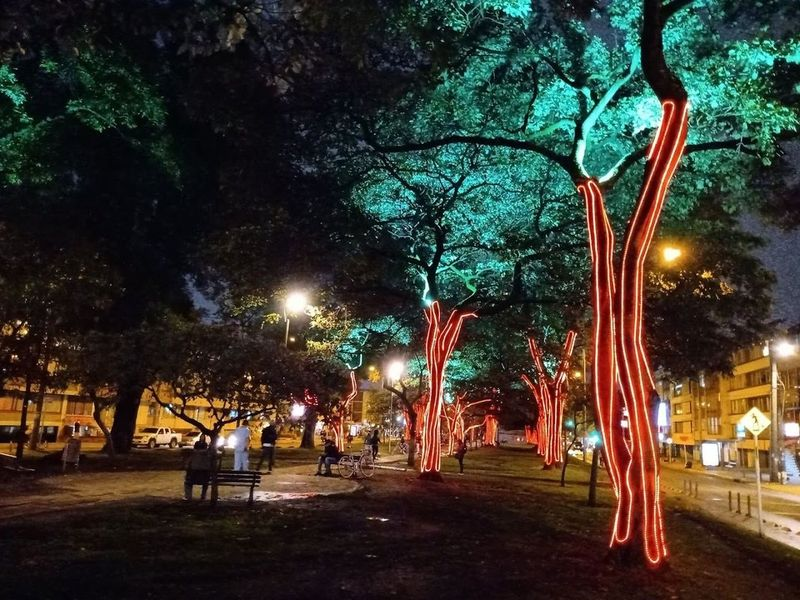
ParkWay
ParkWay is a long, stretched park located in the ParkWay neighborhood of Bogota. The area offers a more alternative vibe and features a variety of nice restaurants along the park, making it an ideal spot for dining and drinks. It's recommended to take a leisurely stroll through the park before choosing a place to eat or drink. Despite recent security concerns, ParkWay remains beautiful and pleasant areas of Teusaquillo, offering food, culture, and sports activities.
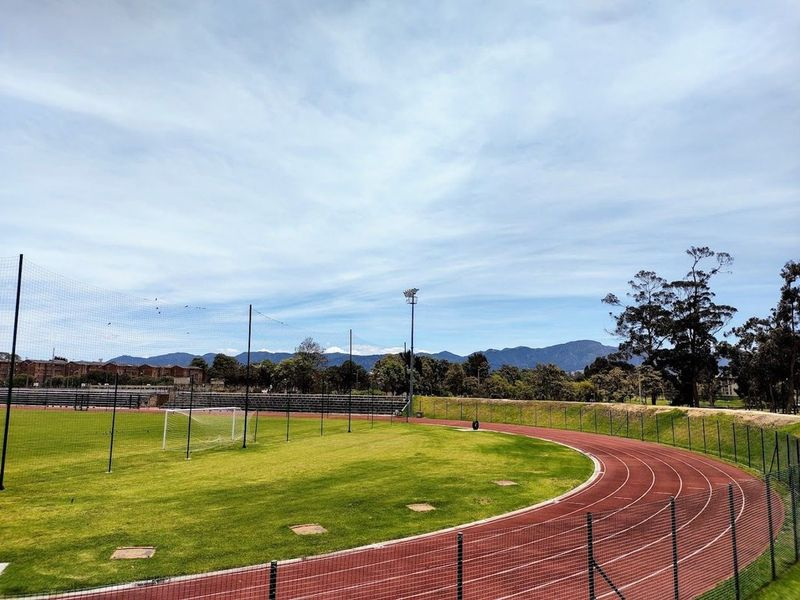
Parque Timiza
Parque Timiza is a popular urban park in Bogotá, known for its large lake and lush greenery. The park offers a range of amenities including a roller-skating rink, running paths, soccer fields, tennis courts, basketball courts, and a cycling lane. Visitors can enjoy the modern landscape design and architecture while engaging in various physical activities or simply taking in the scenic views.